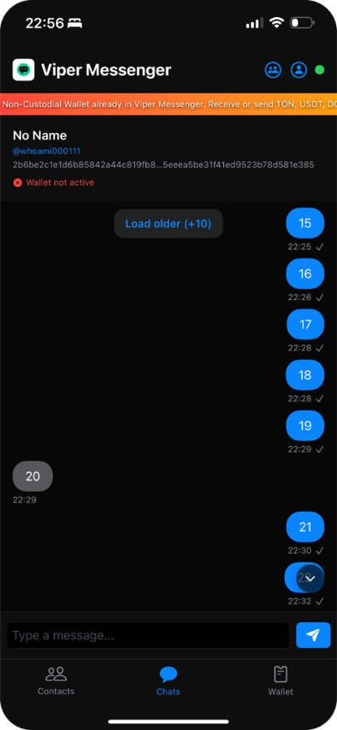
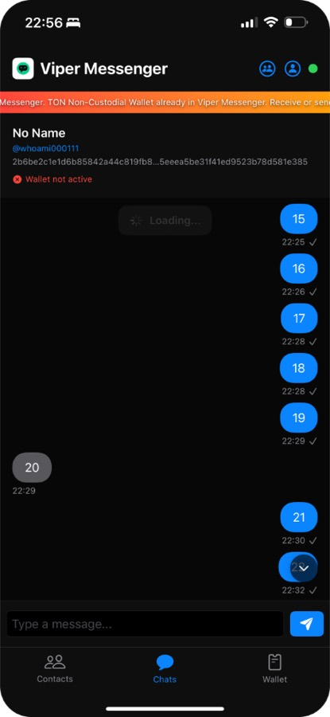

Chat UI in Viper: previous messages logic, scroll preservation and good UX
Chat UI is one of those areas that looks deceptively simple.
At first glance, it's just a list of messages. In practice, it's a constantly mutating structure driven by:
- asynchronous network events,
- partial history loading,
- user interaction,
- and strict UX expectations.
Some of the hardest problems in Viper were deep in the transport layer. Others appeared much closer to the surface.
This post breaks down three closely related topics:
- prepend logic,
- scroll position preservation,
- and what "good chat UX" actually means in practice.
1. Why prepend is not trivial
Loading older messages usually means prepending data to the top of the list.
Naively, it looks like this:
messages = newMessages + oldMessages
But the moment you do this in a real UI, everything breaks:
- the scroll position jumps,
- the visible message changes,
- the user loses context.
What matters here is not the prepend itself, but what happens to the visible content.
When history is loaded, the user expects the same messages to remain in the same place on the screen.
If the UI shifts, even slightly, the experience feels wrong.

When you tap "Load older (+10)", new messages are fetched and prepended above the current viewport. The scroll position is preserved — you stay on the same message you were viewing.

During the loading process, a "Loading..." indicator appears. Once loaded, you can scroll up to see the newly added messages without losing your current position.
2. UX is about predictability, not polish
Good chat UX is often confused with:
- animations,
- transitions,
- visual polish.
Those help, but they're secondary.
What actually defines good UX in chat is predictability.
The interface should behave exactly as the user expects:
- scrolling up loads history without jumping,
- new messages don't steal focus,
- the list never "teleports".
Users are extremely sensitive to small inconsistencies in chat interfaces. Even minor scroll glitches are perceived as bugs — because they break trust.
A technically correct UI that feels wrong is still wrong.
3. Where SwiftUI stops being enough
I initially tried to solve this entirely in SwiftUI.
For simple lists, SwiftUI works great. But chat UI pushes it into uncomfortable territory.
At a certain point, I needed:
- precise control over scroll position
- reliable access to content size
- predictable layout timing
- the ability to react to multiple layout passes
These are areas where SwiftUI intentionally abstracts things away.
That abstraction is usually a benefit — but in this case, it became a limitation.
To get the behavior I needed, I had to drop down to UIKit for:
- manual scroll management
- explicit layout measurement
- tighter control over when and how state changes affect the view
SwiftUI still renders the content. UIKit owns the scrolling.
This hybrid approach wasn't about fighting SwiftUI. It was about using the right level of control for the problem.
4. Why these problems matter
It's easy to dismiss this as overengineering.
But solving problems like prepend and scroll preservation forces you to:
- think in terms of state transitions,
- separate data from presentation,
- reason about time, order, and causality.
After working through problems at this level, typical business tasks — CRUDs, dashboards, admin panels — become dramatically simpler.
There's a reason for that.
Hard problems sharpen your engineering intuition. They teach you how to reason under constraints.
As the saying goes:
"Hard in training — easy in battle."
Closing thoughts
A good chat interface fades into the background.
When it works well, the user doesn't notice the UI at all — only the conversation.
Working on Viper taught me that achieving this "invisibility" often requires more thought, not less.
Once the interface stops drawing attention to itself, the solution feels simple — even if it wasn't.
First published December 22, 2025 on the old Viper Foundation blog; moved here November 19, 2026. All posts